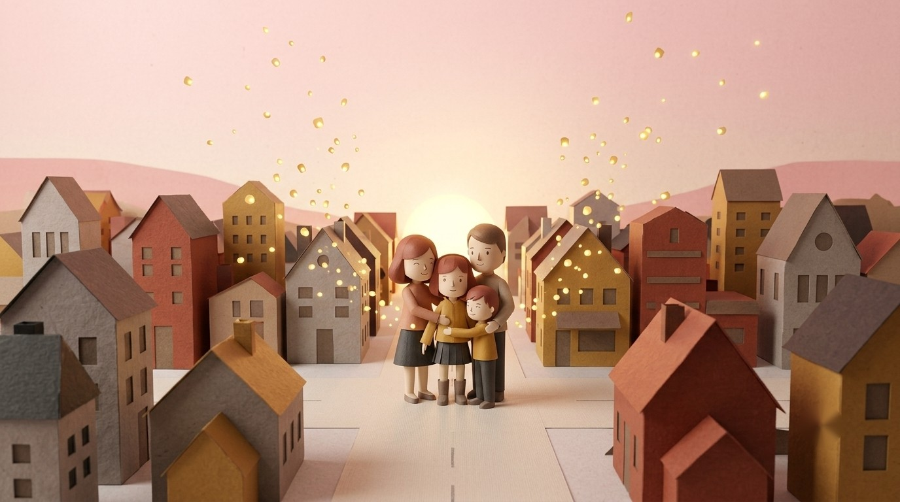
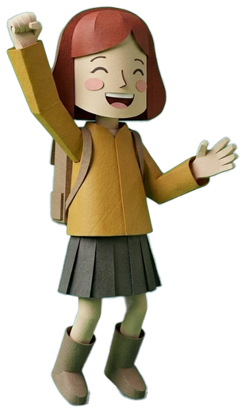

Where Lines Meet
1부 · 소실점을 찾는 눈엔딩

세상이 다시 입체가 되었어요
네가 그은 선을 따라 납작했던 마을이 하나둘 일어섰어. 벽에 붙어 있던 가족도 입체로 돌아와 소녀를 꼭 안아 주었단다. 고마워, 소실점을 되찾아 준 화가님!
이 화면을 캡처해서 클래스룸이나 패들렛에 제출해요.

네가 그은 선을 따라 납작했던 마을이 하나둘 일어섰어. 벽에 붙어 있던 가족도 입체로 돌아와 소녀를 꼭 안아 주었단다. 고마워, 소실점을 되찾아 준 화가님!
이 화면을 캡처해서 클래스룸이나 패들렛에 제출해요.
1부 단계
그 밖에
